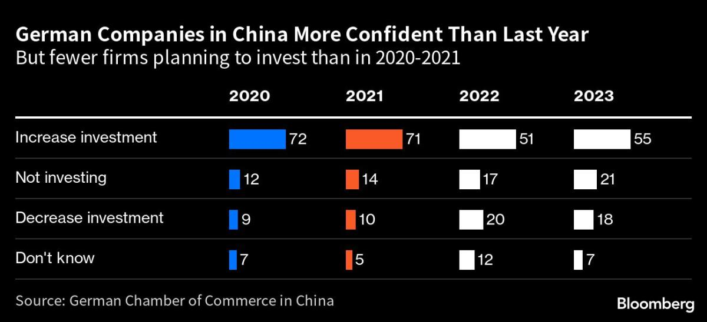

Why German Businesses Remain Pessimistic About China's Reopening
Image Credits https://news.yahoo.com/china-reopening-fails-lift-confidence-093000230.html
Despite the easing of pandemic restrictions in China, German businesses are not as confident about the country's prospects as one would expect. A recent industry survey showed that worries about the economy and geopolitical tensions continue to dominate their perceptions of the Chinese market.
One reason for this is the ongoing trade tensions between the US and China, which have had a ripple effect on businesses around the world. German firms are not immune to this, as China is an important market for their products and services. Uncertainty about the future of trade relations between the two superpowers is therefore a major concern for German businesses operating in China.
Another factor that is contributing to their pessimism is the state of the Chinese economy. Although it has rebounded from the pandemic-induced slump, there are concerns about its long-term sustainability. The Chinese government's attempts to rein in debt and promote sustainable growth are seen as evidence of this, but they have also created additional challenges for foreign businesses. For example, restrictions on certain industries and increased competition from domestic firms have made it harder for German businesses to operate in China.
Case Studies
To illustrate the challenges that German businesses face in China, let's look at some case studies:
Siemens AG
Siemens AG is a German multinational conglomerate that operates in a wide range of industries, including energy, healthcare, and transportation. It has a significant presence in China, but its operations have been impacted by the trade tensions between the US and China. For example, in 2019, the US government added Huawei, a major customer of Siemens, to its Entity List. This meant that American companies, including Siemens, were no longer able to do business with Huawei without a license. As a result, Siemens had to find alternative customers in China to fill the gap, which was a difficult and time-consuming process.
BASF SE
BASF SE is a German chemical company that is one of the largest producers of chemicals in the world. It has also been affected by the trade tensions between the US and China, as well as the Chinese government's desire to promote domestic companies. In 2020, the Chinese government imposed anti-dumping duties on imports of chemicals used in the production of tires and other rubber products, which impacted BASF's sales in China. The company responded by cutting jobs and restructuring its operations in China, but it remains a challenging market for them.
Conclusion
Despite the challenges, German businesses recognize the importance of the Chinese market and remain committed to operating there. However, they also acknowledge that there are significant risks involved, and are looking for ways to mitigate them. This includes diversifying their operations to other markets, seeking out new opportunities in China's growing middle class, and investing in research and development to stay ahead of the competition. Ultimately, the success of German businesses in China will depend on their ability to navigate the complex economic and geopolitical landscape, and adapt to changing conditions.
Curated by Team Akash.Mittal.Blog
Share on Twitter Share on LinkedIn